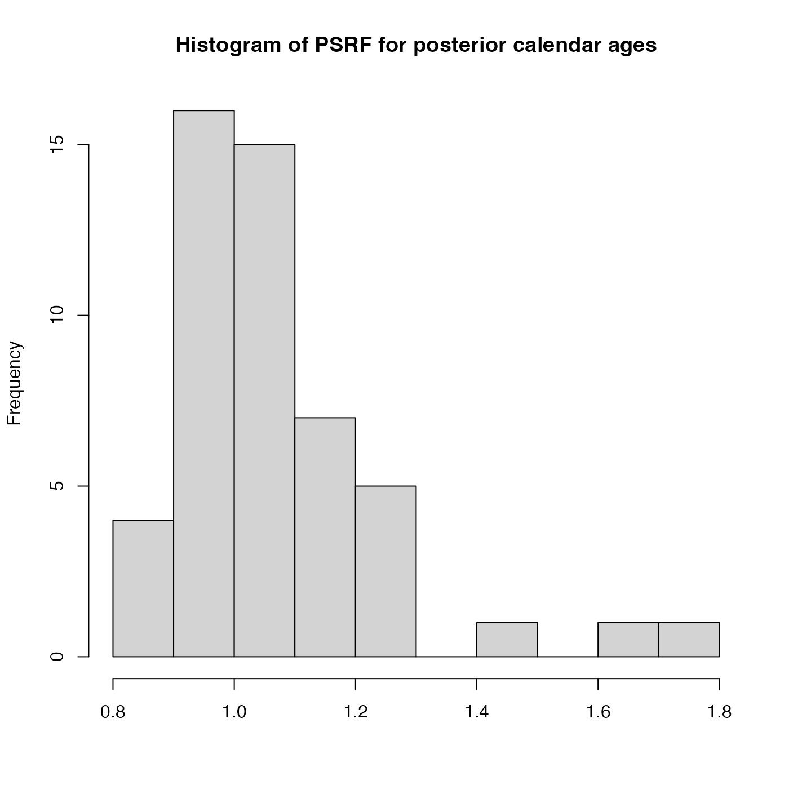

Plot Histogram of the Gelman-Rubin Convergence Diagnostic for a Single MCMC Chain
Source:R/PlotGelmanRubin.R
PlotGelmanRubinDiagnosticSingleChain.RdThis plots a histogram of the potential scale reduction factors (PSRF) for each of the individual posterior
calendar age estimates within a single MCMC chain. Achieved by splitting the chain into segments
after n_burn and comparing the within-chain variance with the between-chains
variance of the segments. The PSRF of each sample's posterior calendar age is calculated.
If the chain have converged to the target posterior distribution, then PSRF should be close to 1
for all of the samples (a stringent condition is that all values are less than 1.1).
For more information read the vignette: vignette("determining-convergence", package = "carbondate")
Arguments
- output_data
The return value from one of the updating functions, e.g., PolyaUrnBivarDirichlet, WalkerBivarDirichlet or PPcalibrate.
- n_burn
The number of MCMC iterations that should be discarded for burn-in. This relates to the total number of iterations
n_iterwhen running the original update functions (not the thinnedoutput_data). Any MCMC iterations before this are not used in the calculations of the PSRF. If not given, the first half of the MCMC chain is discarded. Note: The maximum value that the function will allow isn_iter - 100 * n_thin(wheren_iterandn_thinare the arguments that were given to PPcalibrate) which would leave only 100 of the (thinned) values inoutput_data.- n_segments
The number of segments to split the chain into. Default is 3, must be a number between 2 and 10.
Examples
# Plot results for the example data - n_iter is too small for convergence
# Try increasing n_iter to see the values of the PSRF decrease
polya_urn_output <- PolyaUrnBivarDirichlet(
two_normals$c14_age,
two_normals$c14_sig,
intcal20,
n_iter = 500,
show_progress = FALSE)
PlotGelmanRubinDiagnosticSingleChain(polya_urn_output)
